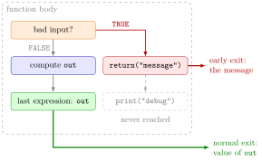

Return Values¶
Definition¶
The return value of a function call is the single object the call hands back to the code that called it:
- if the body executes
return(value), the function stops at once and returnsvalue; - otherwise the function runs to the end of its body and returns the value of the last evaluated expression.
A function returns exactly one object. To return several results, combine them into one vector or list. If the last expression is an assignment such as out <- 55, its value is returned invisibly: it can be stored, but calling the function at the console does not display it.
Interpretation¶
The return value is the answer a function gives back; everything else that happens inside the body stays inside. return() makes that answer explicit and also works as an emergency exit: as soon as it runs, the rest of the body is skipped.

The figure shows the two ways out of a function body. A return() inside an if statement can leave early, as row_sums() does in Example 4 when the input is not a numeric matrix; otherwise the function reaches its last line and returns that value.
Returning and printing are different things. Returning passes a value to the caller, where it can be stored with <- or used in a further calculation. At the console, R displays a visible return value only because nobody stored it. A print() inside the body displays output as a side effect whenever that line runs, even if the result is stored; it does not change what is returned. This is also why return() is safer than relying on the last expression: adding a debugging line such as "debug" at the end silently changes the result.
A function that has to report several numbers, such as a minimum, a maximum and their difference, returns a named list; the caller then picks the parts out with $ or double brackets.
A common mistake is ending a function with an assignment, outf <- out, and then wondering why calling it at the console shows nothing. The value is returned, only invisibly; end with out or return(out) instead.
Key Results¶
- Without
return(), a function returns the value of the last expression it evaluated. return(value)exits the function immediately; code after it in the same call does not run.- A function returns one object; several results are returned as a vector or a (named) list.
- If the last expression is an assignment, the value is returned invisibly: storing it works, but nothing is displayed.
print()inside a function displays a value even when the call is assigned; it is the return value only when it is the last line (print()hands back what it printed).
Examples¶
1. The last expression. With and without an explicit return(), and the effect of an extra last line:
own_sum_no_return <- function(xvec) {
out <- 0
for (i in xvec) {
out <- out + i
}
out
}
own_sum_debug <- function(xvec) {
out <- 0
for (i in xvec) {
out <- out + i
}
"debug"
}
own_sum_no_return(1:10)
#> [1] 55
own_sum_debug(1:10)
#> [1] "debug"
2. Code after return() is not run. The print() line is never reached:
own_sum_with_return <- function(xvec) {
out <- 0
for (i in xvec) {
out <- out + i
}
return(out)
print("debug")
}
own_sum_with_return(1:10)
#> [1] 55
3. Returning versus displaying. A final assignment returns its value invisibly:
own_sum_assignment <- function(xvec) {
out <- 0
for (i in xvec) {
out <- out + i
}
outf <- out
}
own_sum_assignment(1:10)
res <- own_sum_assignment(1:10)
res
#> [1] 55
The first call displays nothing, yet the stored result is 55.
4. Several results and an early exit. A named list for the minimum, maximum and their difference, and a message for invalid input:
min_max_range <- function(x, na_rm = FALSE) {
min_x <- min(x, na.rm = na_rm)
max_x <- max(x, na.rm = na_rm)
return(list(min = min_x, max = max_x, range = max_x - min_x))
}
res <- min_max_range(c(0, 100, NA), na_rm = TRUE)
res$range
#> [1] 100
row_sums <- function(x) {
if (!(is.numeric(x) & is.matrix(x))) {
return("Input must be a numeric matrix")
}
out <- rep(0, nrow(x))
for (i in 1:nrow(x)) {
out[i] <- sum(x[i, ])
}
out
}
row_sums(matrix(1:6, nrow = 2, byrow = TRUE))
#> [1] 6 15
row_sums(c(1, 2, 3))
#> [1] "Input must be a numeric matrix"
Here range is the difference between maximum and minimum, unlike the built-in range(), which returns the two endpoints. For a vector, row_sums() leaves at the first return() and never reaches the loop.
Prerequisites¶
Related Concepts¶
- Default Arguments in Your Own Functions
- Function Environment
- Recursive Function
- if–else Statement
- Single and Double Brackets
Sources¶
- Programming for EOR · Week 3
- Lecture 3, Part 2 Functions and Recursion, section "Returning values"; Solutions Week 3, Part 2 Exercises 3–4
Aliases: return, return(), return value, output of a function, invisible result, returning a list Keywords: last evaluated expression, return() exits early, return versus print, several results in a list
Last updated: 10 November 2026 16:43
Return ValuesRecursive FunctionWriting FunctionsListDefault Arguments in Your Own FunctionsFunction Environmentif–else StatementSingle and Double Brackets